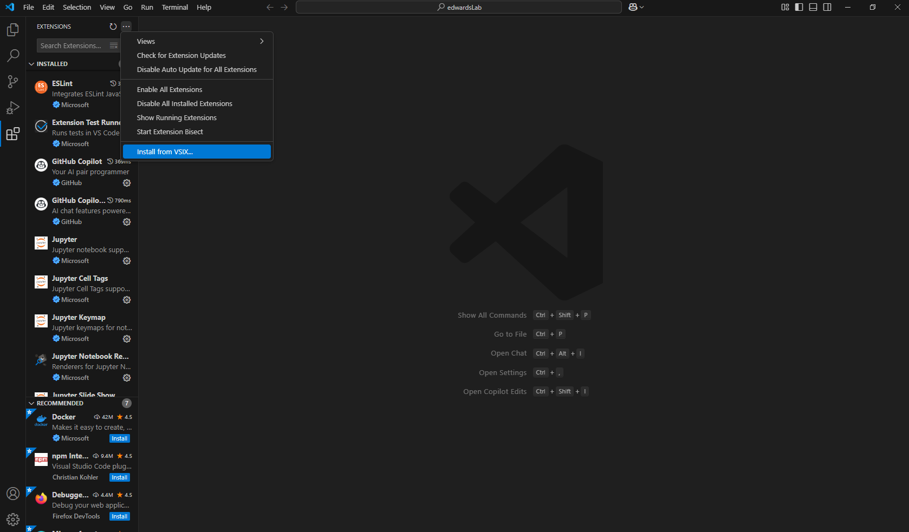

KeyLogger
Instructions for installing the KeyLogger VS Code extension
- Download the extension from here.
- Open VS Code.
- Open View > Extensions.
- Press the "..." button in the top-right corner of the Extensions view.
- Select "Install from VSIX...". (See screenshot below.)
- Choose the KeyLogger.vsix file.
- After installation, you should see a message in the bottom right corner stating, "Keylogger is activated!".
- After editing a source code file, you should see a file called "HackUSU_Keylogs.db" appear on your desktop. This is the log file.
To uninstall the extension:
- Open VS Code.
- Open View > Extensions.
- In the search bar of the Extensions view, type "KeyLogger".
- Right-click on the KeyLogger extension and select "Uninstall".
- Restart VS Code.
